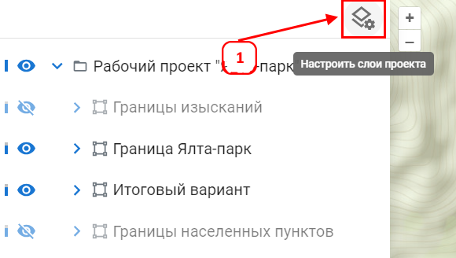
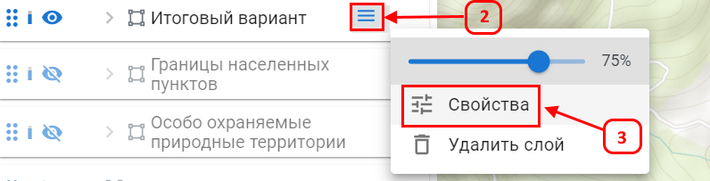
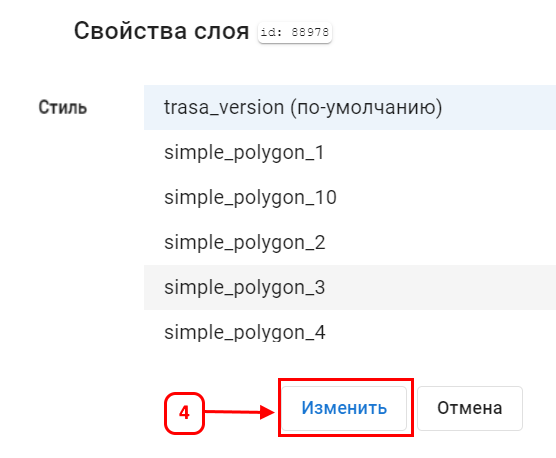
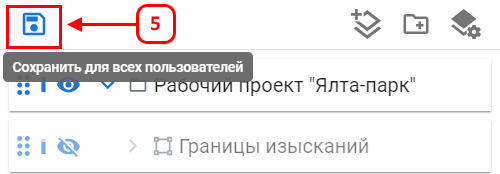

Выбор стиля для слоя
В свойствах слоя есть возможность выбирать стиль.
Для выбора стиля переходим в настройки слоя проекта (1).

Переходим в свойства слоя которому нужно изменить стиль (3).

В свойствах слоя в последнем пункте можно изменить стиль на один из десяти предложенных или оставить стиль по умолчанию для данного слоя

После выбора стиля, если вы являетесь владельцем проекта необходимо сохранить изменения в проекте для всех пользователей.

После выбора стиля для всех пользователей слой будет работать под последним сохраненным стилем.